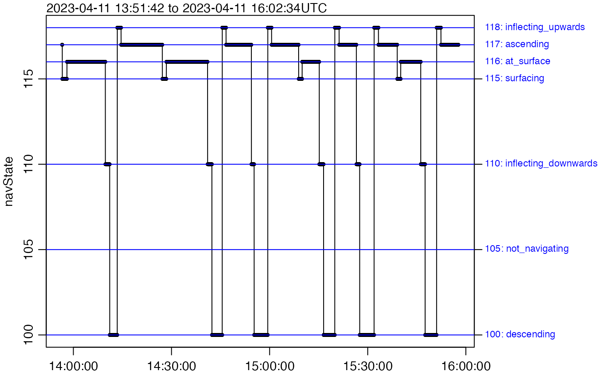
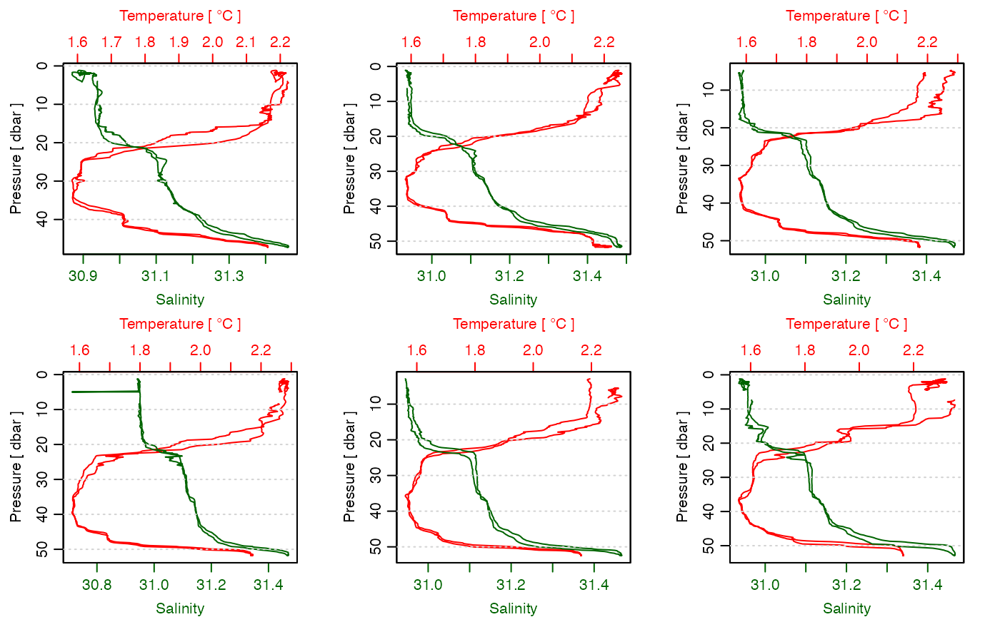
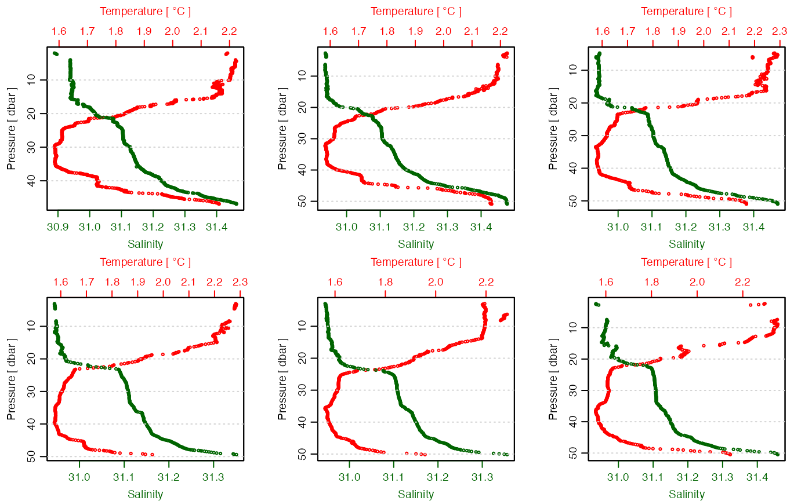
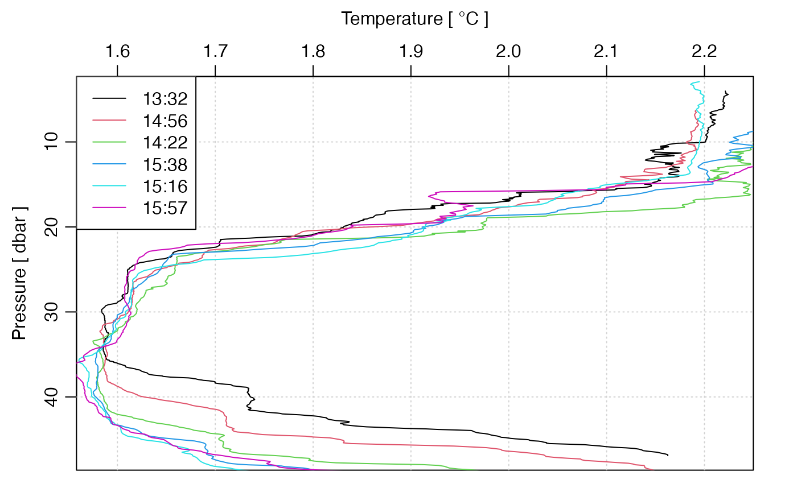

Introduction to oceglider
Dan Kelley (https://orcid.org/0000-0001-7808-5911)
2024-06-22
Source:vignettes/oceglider.Rmd
oceglider.RmdAbstract. This vignette explains the basics of using
the oceglider package. It is a work in progress, because
the functions provided by this package are under active development.
Introduction
The oceglider package is intended to make it easier for
analysts to work with data acquired by ocean gliders. There is a wide
variety of glider types and file formats, and discussing them all is
beyond the scope of this document, let alone the package. I hope in what
follows to give a flavour for what is is like to work with a particular
type (the SeaExplorer glider, from Alseamar) and particular approach
(using data files produced by the glider itself).
The form of the document is that of an illustrated diary, touching on some elements of working with a small sample dataset that is provided with the package.
Data Sources and file organization
The first step in working with glider data is often to download them
from a server. The lack of URL conventions for such servers makes it
challenging to discuss in general terms. The same can be said of the
various file layouts. The oceglider package cannot handle
the wide variety of possibilities. Indeed, whether the code shown here
will work on new datasets is very much in question.
The package comes with some sample files that will be used for illustration. These files are also used in the help pages that come with the package. They stem from extraction of files from the following directories on the author’s computer.
~/data/glider/sea021/M71/raw
~/data/glider/sea021/M71/subThe convention is as follows. The sea021 directory
contains data from a SeaExplorer glider owned by a particular institute,
and M49 directory holds the data from a particular mission.
The raw directory holds full datasets as downloaded a
glider after recovery. The sub directory holds subsets
provided by the glider during its transmissions while underway on a
mission.
SeaExplorer Gliders
This package comes with some sample data files that can be used for practice and illustration.
Reading Datasets
A small dataset provided with the package may be loaded as follows.
library(oceglider)
#> Loading required package: oce
#> Loading required package: gsw
library(oce) # used in some later things
directory <- system.file("extdata/seaexplorer/sub", package = "oceglider")
g <- read.glider.seaexplorer.delayed(directory)Pressure-time Plots
Here is how to plot a time-series of pressure from this dataset
plot(g, which = "p")In the plot, notice that the glider is at the surface (the pressure
indicates the sensor is about 1 m below the surface) for about 10
minutes, then descends to about 45 m depth, rising more slowly towards
the surface. This pattern of lowering and then rising is called a “yo”
in the oceglider package. The first two yos in this dataset
reached to the surface, while the third only got near the surface.
During this small sampling, full surfacing was quite common, although
later in the glider mission there were quite a few more partial yos
between pairs of full yos.
Navigation State
This dataset holds something called navState by the
package. This can be seen in plots like the following. Notice that the
glider is in the at_surface state at the start of the first
two yos. (Exercise: to learn how to interpret the format of
this diagram, try finding the full yos, and compare that with the
previous diagram.)
plot(g, which = "navState", type = "o", cex = 0.5)
For reference, the navState values are as follows:
- 105 means the glider is not navigating yet;
- 115 means the glider is surfacing in preparation for communication;
- 116 means the glider is at the surface, acquiring a GPS signal, and is communicating;
- 110 means the glider is inflecting downward;
- 100 means the glider has ballast set to be descending;
- 118 means the glider has ballast adjusted to reduce density, so will be inflecting upward;
- 117 means the glider has ballast set to be ascending.
Maps
The following shows how to see locations in space. Note that 1 degree of latitude is approximately 111 km, so the total span of the diagram is only about half a kilometre.
plot(g, which = "map", cex = 0.5)Isolating Yos
Quite often, it will be desirable to work with individual yos. With only 3, as in this small test case, we might as well plot them (say as temperature profiles). For that, it is helpful to split by yo number, and then cycle though the subsets, converting to CTD objects and plotting with functions from the package.
The individual yos can be examined by splitting the
payload portion:
payload <- g[["payload"]]
s <- split(payload, payload$yoNumber)
par(mfrow = c(2, 3)) # we happen to know there are 6 yos
for (ss in s) {
ctd <- as.ctd(
salinity = ss[["salinity"]],
temperature = ss[["temperature"]],
pressure = ss[["pressure"]],
longitude = ss[["longitude"]],
latitude = ss[["latitude"]]
)
plotProfile(ctd, xtype = "salinity+temperature", eos = "unesco")
}
Let’s use the navigation state to examine the ascending data.
ga <- subset(g, navState == 117)
payload <- ga[["payload"]] # or [["payload1"]]
s <- split(payload, payload$yoNumber)
par(mfrow = c(2, 3))
for (ss in s) {
ctd <- as.ctd(
salinity = ss$salinity,
temperature = ss$temperature,
pressure = ss$pressure,
longitude = ss$longitude,
latitude = ss$latitude
)
plotProfile(ctd,
xtype = "salinity+temperature", eos = "unesco",
type = "p", cex = 0.5
)
}
Waterfall Plots
Let’s try a waterfall temperature plot, with black for the first yo, red for the second, and green for the third.
par(mfrow = c(1, 1))
xlim <- range(ss[["temperature"]], na.rm = TRUE)
for (i in seq_along(s)) {
ss <- s[[i]]
ctd <- as.ctd(
salinity = ss$salinity,
temperature = ss$temperature,
pressure = ss$pressure,
longitude = ss$longitude,
latitude = ss$latitude
)
ctd <- ctdTrim(ctd, "upcast")
if (i == 1) {
plotProfile(ctd,
xtype = "temperature", eos = "unesco",
xlim = xlim
)
} else {
lines(ctd[["temperature"]], ctd[["pressure"]], col = i)
}
}
legend("topleft",
lwd = 1, col = seq_along(s), cex = 1, bg = "white",
legend = sapply(s, function(ss) format(ss$time[[1]], "%H:%S"))
)
Computing Oxygen
A more advanced example concerns oxygen. For SeaExplorer files, this
is indicated by a variable named GPCTD_DOF (which is
renamed to oxygenFrequency by the
[read.seaexplorer.delayed()]), and a conversion process is required to
get oxygen in umol/kg. This is as follows. First, we must insert
calibration information into the glider object. (Note: the format
follows a convention developed by Chantelle Layton at the Canadian
Department of Fisheries and Oceans, in the project. In fact, the
computation of oxygen only requires the
calibrationCoefficients entry.)
directory <- system.file("extdata/seaexplorer/sub", package = "oceglider")
g <- read.glider.seaexplorer.delayed(directory = directory, progressBar = FALSE)
g <- oceSetMetadata(g, "oxycalib", list(
serialNumber = "43-3336",
model = "SBE43F",
calibrationDate = "20220201",
calibrationCoefficients = data.frame(
Soc = 3.0667e-4,
Foffset = -878.86,
Tau20 = 1.26,
A = -4.6593e-3,
B = 1.7954e-4,
C = -2.2483e-6,
Enom = 0.036
)
))Once this is done, the [[ can compute oxygen, as in the
following. This plot requires a few steps to complete, especially with
respect to margins.
cm <- colormap(g[["oxygen"]], col = oceColorsTurbo)
par(mar = c(2, 3, 1, 1))
drawPalette(colormap = cm)
t <- g[["time"]]
p <- g[["pressure"]]
oce.plot.ts(t, p,
ylim = rev(range(p, na.rm = TRUE)),
type = "p", col = cm$zcol,
mar = c(2, 3, 1, 4)
)
Exercise: Can you think of a physical reason for the low surface oxygen in the first of the dataset? How about a mechanical/electronic reason? (Hint: I fully omitted the first yo from the dataset, because it had what I’ll call startup problems…)
Next steps
At this stage, readers will likely have some ideas for doing more with this sample dataset, but they ought to bear in mind that aspects of the dataset may be quite different from other datasets. It makes sense to explore things in detail, as has been done above, before moving on to final results. This applies not just to Sea Explorer datasets, but to Slocum datasets as well (see the vignette on that data type).
References
Integrated Ocean Observing System (U.S.). “Manual for Quality Control of Temperature and Salinity Data Observations from Gliders. Version 1.0.” Report. U.S. Department of Commerce, National Oceanic and Atmospheric Administration, National Ocean Service, Integrated Ocean Observing System, U.S. Integrated Ocean Observing System, Glider Data Assembly Center, 2016. https://www.oceanbestpractices.net/handle/11329/289.
Integrated Ocean Observing System (U.S.). “NGDAC NetCDF File Format Version 2,” March 27, 2019. https://github.com/ioos/ioosngdac/wiki/NGDAC-NetCDF-File-Format-Version-2.